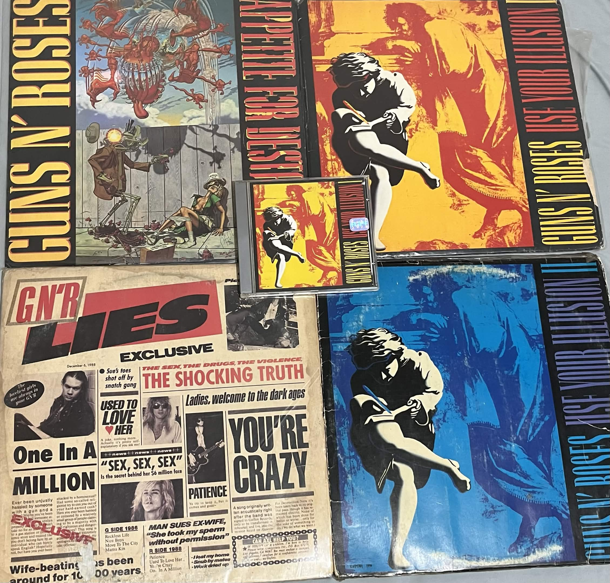
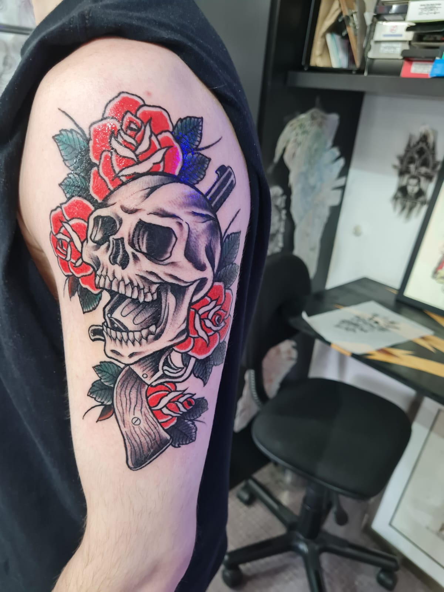
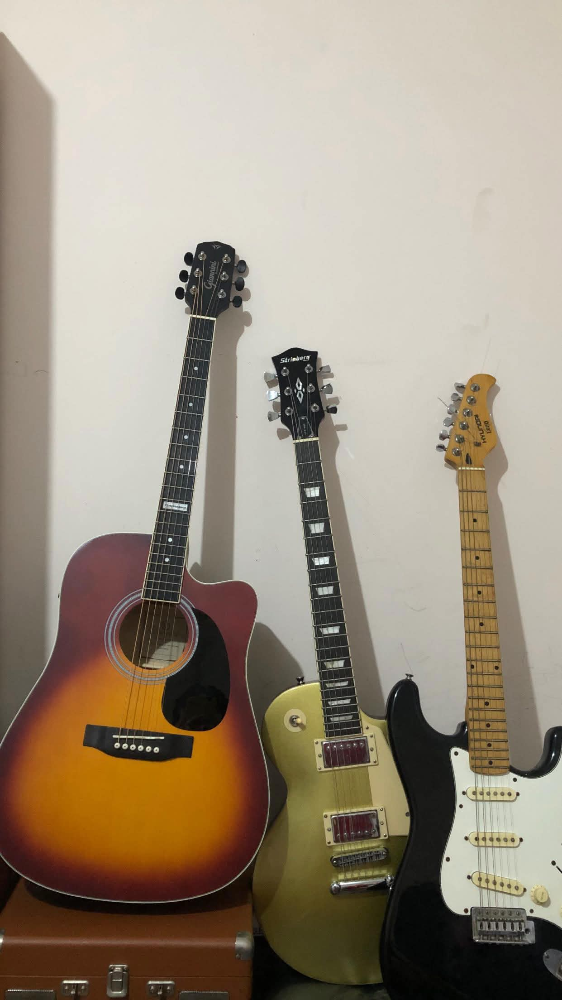
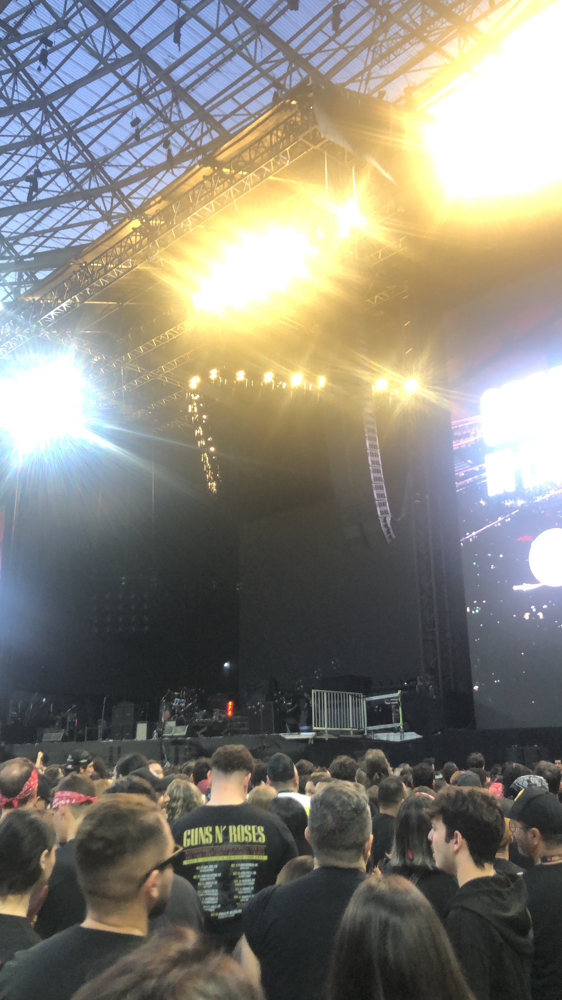
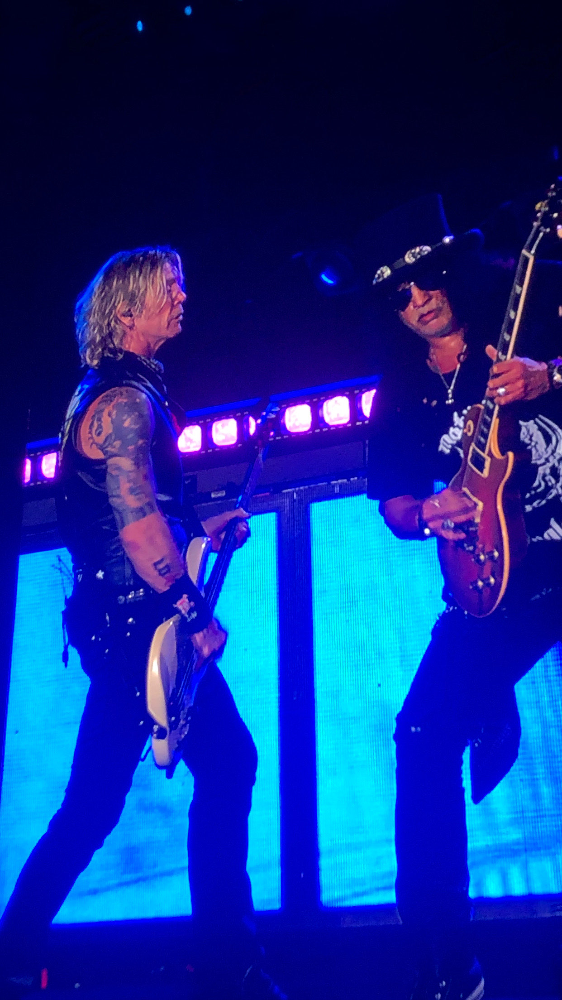

Olá, me chamo Lenny e o Guns N' Roses está presente na minha vida desde os primeiros momentos de que tenho memórias. Me lembro dos passeios de carro com o meu pai, onde ele tocava as músicas e nós curtíamos. Por passarmos pouco tempo juntos, essas memórias me marcaram e me influenciam até hoje, e foram o que me fizeram começar a tocar guitarra.
Ouvindo o Guns N' Roses, descobri mais sobre o mundo dos discos de vinil e CDs. Aquela sonoridade me fez querer ir além do digital e ir atrás de colec e um significado espionar alguns álbuns físicos da banda, e a experiência de ouvir eles dessa maneira é única.


A banda marcou tanto a minha vida que decidi eternizar isso na pele. Essa tatuagem é uma homenagem ao Guns N' Roses e representa tudo que a banda significa pra mim — as memórias com meu pai, a música que me moldou e tudo que carrego comigo.
O Slash me fez querer tocar guitarra, e com o tempo fui construindo minha própria coleção. O destaque vai para a minha Les Paul, inspirada na icônica guitarra do Slash — aquela que faz chorar em cada solo. Pegar ela e conseguir tocar esse solo hoje é uma experiência especial.

Depois de anos ouvindo, admirando e sonhando, finalmente pude ir ao show do Guns N' Roses e conhecer meus ídolos de perto. Sentir aquela energia ao vivo, ouvir as músicas que fizeram parte minha vida no estádio... Foi um dos momentos mais marcantes que já vivi.

